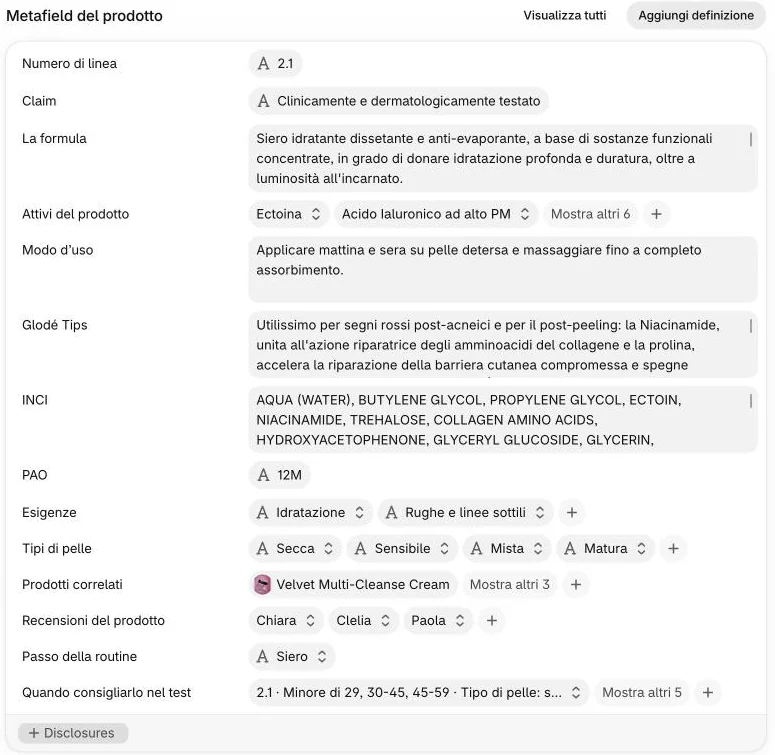
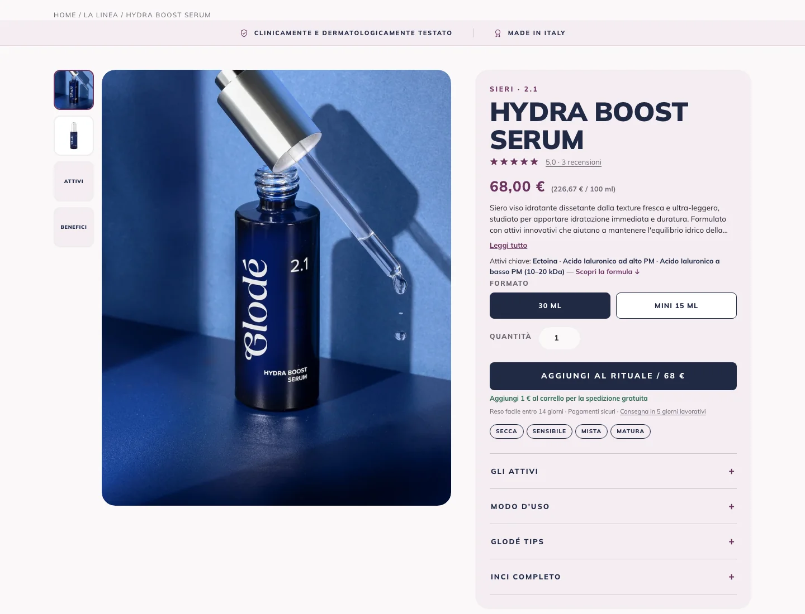
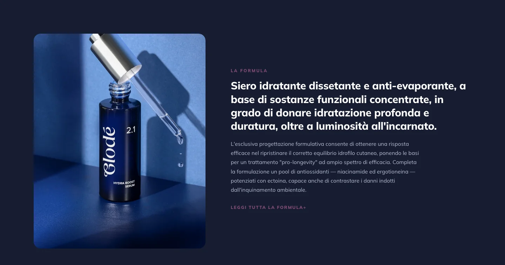
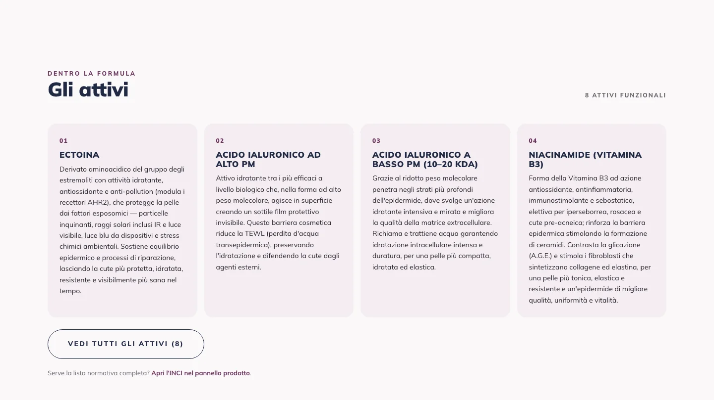
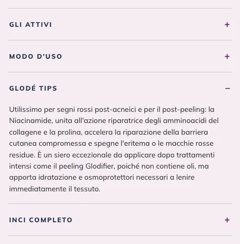
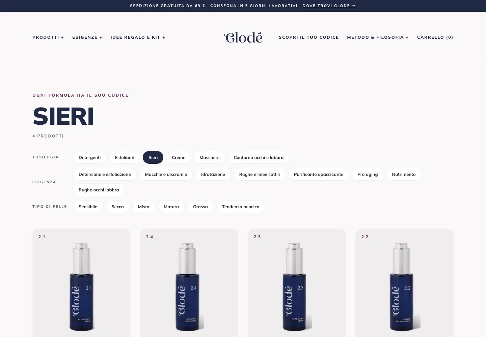
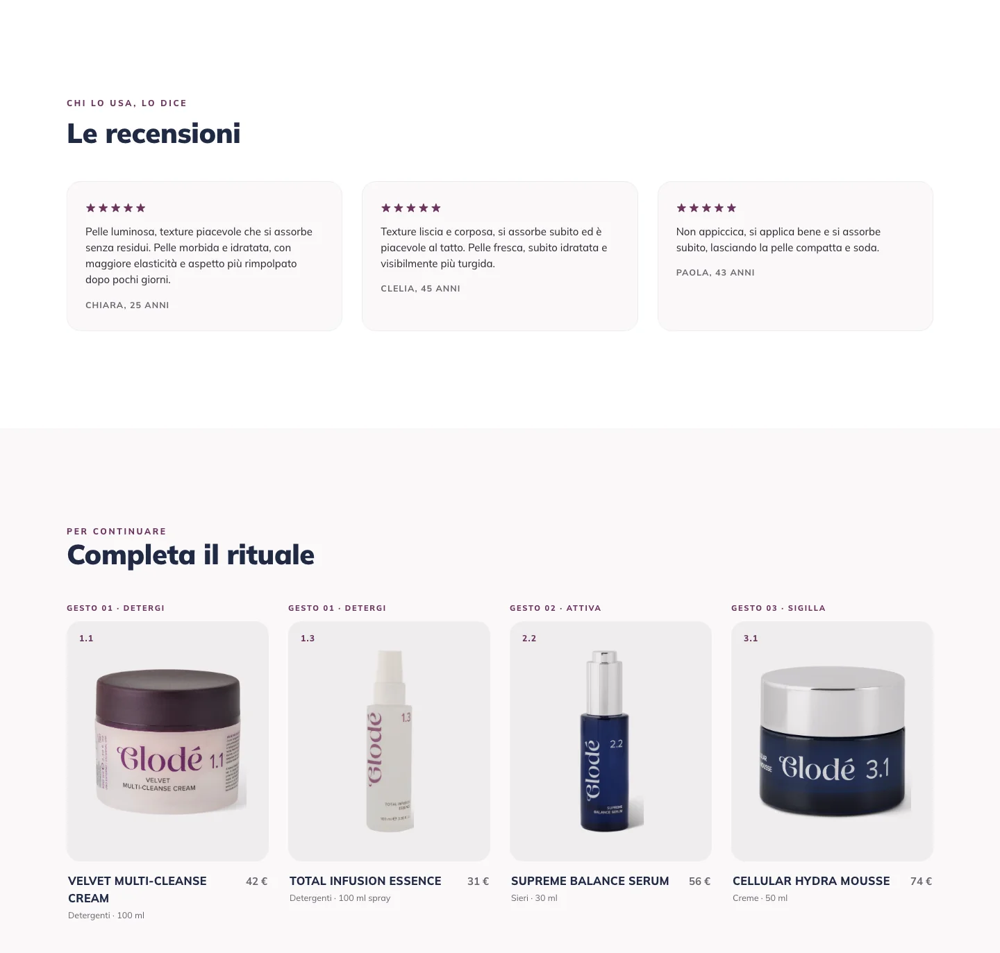
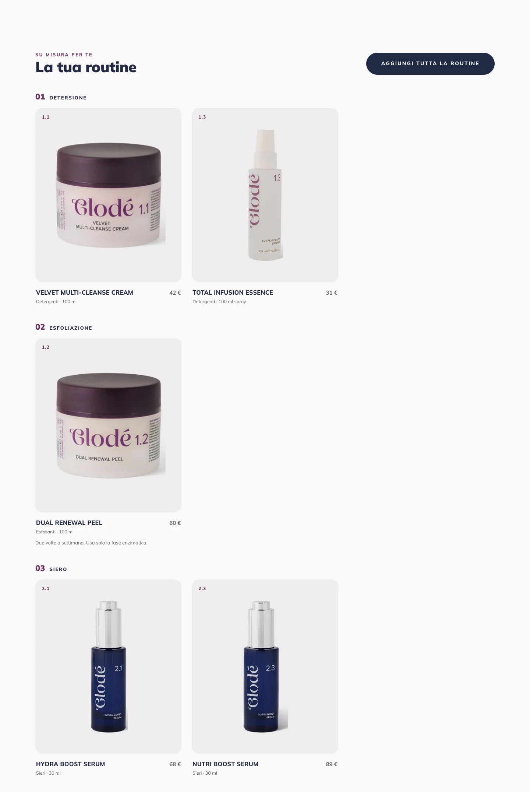
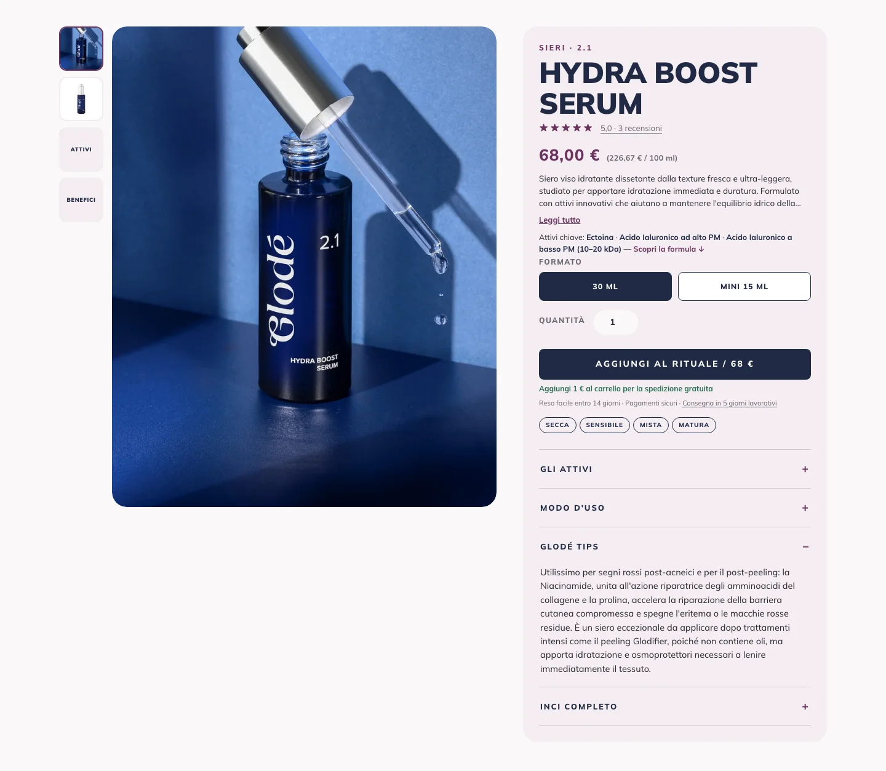

I campi del prodotto, uno per uno
- Da consultare
- Dove si vede ogni campo sul sito
I 14 campi Glodé stanno nel riquadro «Metafield del prodotto», in fondo alla pagina di ogni prodotto. Qui, gruppo per gruppo, dove si vedono sul sito. Aprite un campo per i dettagli.
-
Ecco il riquadro dei campi: si compila dall’alto in basso.

1 Non quiE i campi sotto «Senza Pin»?
Con «Visualizza tutti» si apre la pagina «Metafield prodotto», con altri campi sotto «Senza Pin»: sono di app di Shopify (ricerca, Google). «Prodotti correlati» e «Prodotti complementari» lì sotto sul sito non si vedono: lasciateli vuoti. Si usa il «Prodotti correlati» fra i 14. Vedi Cosa non toccare.
-
In cima alla scheda: «Numero di linea» sopra il nome, «Claim» nella fascia in alto.

2Numero di linea
Sopra il nome («Sieri · 2.1»), sul numerino della piastrella; decide l’ordine in «Tutta la linea» e nel menu.
Si scrive famiglia, punto, posizione: 1.1–1.3 detergenti ed esfoliante, 2.1–2.4 sieri, 3.1–3.3 creme, 4.1 maschera, 5.1–5.2 contorno occhi e labbra. Il punto, non la virgola. Vuoto: il prodotto va in fondo.
Claim
Nella fascia in alto della scheda, accanto a «Made in Italy», e nella risposta «È testato?».
Una riga, come stampato sull’astuccio: oggi «Dermatologicamente testato» o «Clinicamente e dermatologicamente testato». Senza punto finale.
-
«La formula»: la banda scura con il testo della formula.

3La formula
Testo lungo, come nella scheda tecnica. La prima frase esce in grande: conviene che sia chiara da sola. Il resto si apre con «Leggi tutta la formula».
La foto della banda è quella con «texture» nel testo alternativo. Hydra Boost Serum non ha la foto della texture: qui la banda mostra lo scatto ambientato.
-
«Attivi del prodotto»: la sezione «Gli attivi» e gli «Attivi chiave».

4Attivi del prodotto
Un attivo per voce, con Nome e Testo, in ordine di importanza. Come si fa: Aggiungere, togliere o correggere un attivo.
-
«Modo d’uso», «Glodé Tips» e «INCI»: le tendine della scheda.

5Modo d’uso
Tendina «Modo d’uso», riquadro «Come si usa» nella sezione dei tre gesti e risposta «Come si usa?». Gli a capo che scrivete restano a capo sul sito.
Glodé Tips
Tendina «Glodé Tips», solo se il campo è pieno. Come si scrive: Scrivere i Glodé Tips.
INCI
Tendina «INCI completo». Copiato dall’artwork, in maiuscolo come lì, ingredienti separati da virgola e spazio. Rileggete dopo aver incollato: due virgole di seguito vogliono dire un ingrediente saltato.
PAO
Mesi e «M», senza spazi: oggi 6M, 9M o 12M. Oggi sul sito non si vede: compilatelo lo stesso.
-
«Esigenze» e «Tipi di pelle»: collezioni, menu e filtri.

6Esigenze e Tipi di pelle
Si scelgono da un elenco e decidono le collezioni del prodotto, il menu «Esigenze», i filtri del catalogo, la risposta «Per chi è indicato?» e le etichette sotto la descrizione. Come si fa: Esigenze e tipi di pelle.
-
«Recensioni del prodotto» e «Prodotti correlati»: in fondo alla scheda.

7Prodotti correlati
I prodotti di «Completa il rituale», nell’ordine del campo: con il + si sceglie un prodotto; cliccando un prodotto nel campo e poi «Cancella» lo si toglie. Oggi ogni prodotto ne ha quattro. Per cambiarne l’ordine, scriveteci.
Recensioni del prodotto
La banda «Le recensioni» e le stelle accanto al nome. Come si fa: Aggiungere, togliere o correggere una recensione.
-
«Passo della routine» e «Quando consigliarlo nel test»: il risultato del test.

8Passo e voci del test
Come si fa: Decidere quando il test consiglia un prodotto.

Sul sito
Vedete qualcosa sul sito e non sapete da quale campo viene? Partite da «Da dove viene?» nella pagina iniziale: la scheda intera, con un numero per ogni parte.